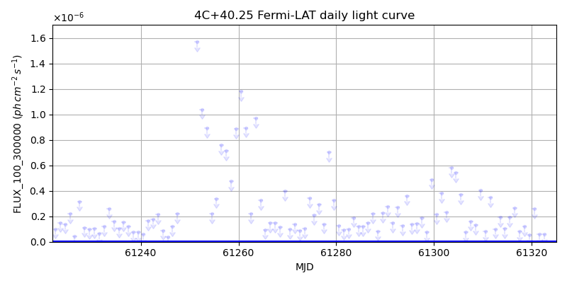
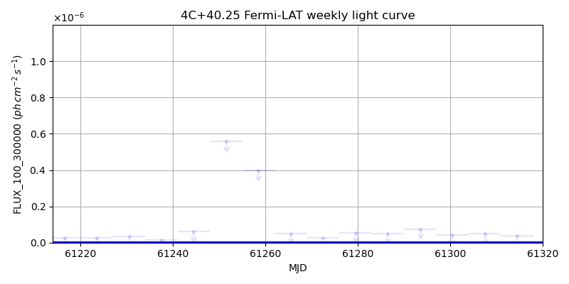
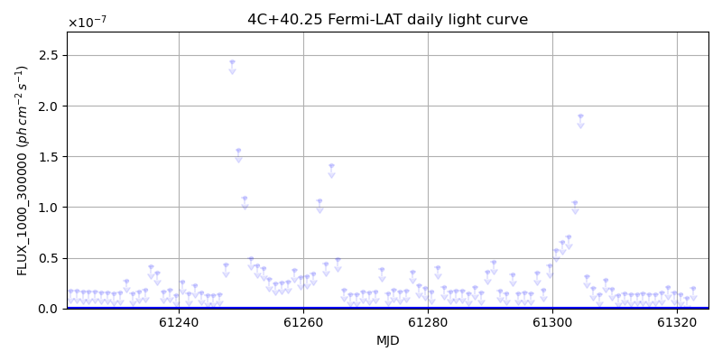
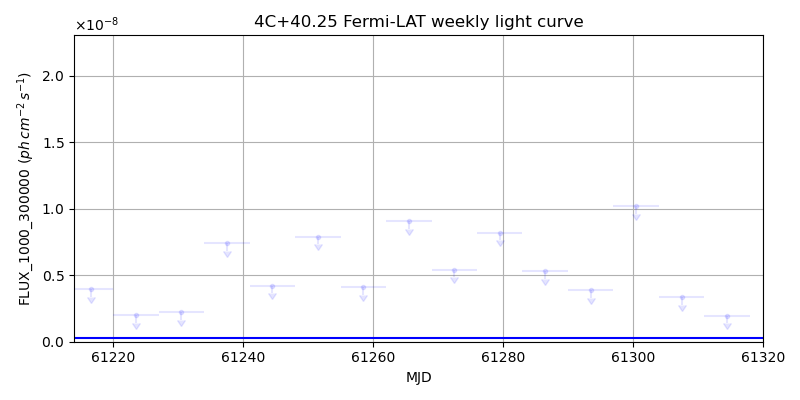

LAT Lightcurve site: https://fermi.gsfc.nasa.gov/ssc/data/access/lat/msl_lc/source/4C_p40d25
NED: Query
Time of last update of this page: UT: 2026-10-10 15:22 (MJD: 61323.640)
| Property | Value |
|---|---|
| R.A. | 10:23:11.52 |
| Dec. | 39:48:14.4 |
| z | 1.254 |
| 3FGL SpectrumType | PowerLaw |
| 3FGL PL Index | 2.73 |
| 3FGL Flux_100_300000 | 1.53e-08 1 / (s cm2) |
| 3FGL Flux_1000_300000 | 2.88e-10 1 / (s cm2) |
| 3FGL Flux >200 GeV | 3.08e-14 1 / (s cm2) |
| 3FGL Extrap. Crab >200 GeV | 0.00 |
| 3FGL Flux After EBL Absorption >200GeV | 1.85e-16 1 / (s cm2) |
| 3FGL EBL Crab Fraction >200GeV | 0.00 |

| MJD | dMJD | Flux | dFlux | Frac3FGL | FracCrab>200GeV | EBLFracCrab>200GeV |
|---|---|---|---|---|---|---|
| 61318.50 | 0.50 | 1.22e-07 | 0.00e+00 | 0.00 | 0.00 | 0.00 |
| 61319.50 | 0.50 | 5.67e-08 | 0.00e+00 | 0.00 | 0.00 | 0.00 |
| 61320.50 | 0.50 | 2.58e-07 | 0.00e+00 | 0.00 | 0.00 | 0.00 |
| 61321.50 | 0.50 | 5.88e-08 | 0.00e+00 | 0.00 | 0.00 | 0.00 |
| 61322.50 | 0.50 | 6.16e-08 | 0.00e+00 | 0.00 | 0.00 | 0.00 |

| MJD | dMJD | Flux | dFlux | Frac3FGL | FracCrab>200GeV | EBLFracCrab>200GeV |
|---|---|---|---|---|---|---|
| 61286.50 | 3.50 | 5.15e-08 | 0.00e+00 | 0.00 | 0.00 | 0.00 |
| 61293.50 | 3.50 | 7.46e-08 | 0.00e+00 | 0.00 | 0.00 | 0.00 |
| 61300.50 | 3.50 | 4.34e-08 | 0.00e+00 | 0.00 | 0.00 | 0.00 |
| 61307.50 | 3.50 | 4.87e-08 | 0.00e+00 | 0.00 | 0.00 | 0.00 |
| 61314.50 | 3.50 | 3.77e-08 | 0.00e+00 | 0.00 | 0.00 | 0.00 |

| MJD | dMJD | Flux | dFlux | Frac3FGL | FracCrab>200GeV | EBLFracCrab>200GeV |
|---|---|---|---|---|---|---|
| 61318.50 | 0.50 | 2.08e-08 | 0.00e+00 | 0.00 | 0.00 | 0.00 |
| 61319.50 | 0.50 | 1.59e-08 | 0.00e+00 | 0.00 | 0.00 | 0.00 |
| 61320.50 | 0.50 | 1.41e-08 | 0.00e+00 | 0.00 | 0.00 | 0.00 |
| 61321.50 | 0.50 | 1.02e-08 | 0.00e+00 | 0.00 | 0.00 | 0.00 |
| 61322.50 | 0.50 | 2.02e-08 | 0.00e+00 | 0.00 | 0.00 | 0.00 |

| MJD | dMJD | Flux | dFlux | Frac3FGL | FracCrab>200GeV | EBLFracCrab>200GeV |
|---|---|---|---|---|---|---|
| 61286.50 | 3.50 | 5.30e-09 | 0.00e+00 | 0.00 | 0.00 | 0.00 |
| 61293.50 | 3.50 | 3.90e-09 | 0.00e+00 | 0.00 | 0.00 | 0.00 |
| 61300.50 | 3.50 | 1.02e-08 | 0.00e+00 | 0.00 | 0.00 | 0.00 |
| 61307.50 | 3.50 | 3.38e-09 | 0.00e+00 | 0.00 | 0.00 | 0.00 |
| 61314.50 | 3.50 | 1.97e-09 | 0.00e+00 | 0.00 | 0.00 | 0.00 |
--------------------------------------------------------- Using user-supplied coords: 10:23:11.52 39:48:14.4 2000 --------------------------------------------------------- FLWO UT night of: 2026-10-11 Local Sid. @ Midnight: 00:55 Sunset (-15.0) (local, UT): 19:04 02:04 Sunrise (-15.0) (local, UT): 05:18 12:18 Moonrise (local, UT): Moonset (local, UT): Moon phase: 0.01 --------------------------------------------------------- AzTime LSID UT Obj_el Obj_az Mn_el Mn_az Sep. --------------------------------------------------------- 19:04 19:58 02:04 -11.1 332.2 -16.1 264.2 66.0 19:34 20:29 02:34 -13.8 337.5 -22.3 267.8 66.3 20:04 20:59 03:04 -15.9 343.0 -28.5 271.5 66.5 20:34 21:29 03:34 -17.5 348.8 -34.7 275.4 66.7 21:04 21:59 04:04 -18.4 354.8 -40.8 279.7 67.0 21:34 22:29 04:34 -18.6 0.9 -46.8 284.6 67.3 22:04 22:59 05:04 -18.2 7.0 -52.7 290.5 67.5 22:34 23:29 05:34 -17.1 13.0 -58.4 297.7 67.8 23:04 23:59 06:04 -15.3 18.7 -63.6 307.3 68.1 23:34 00:29 06:34 -13.0 24.2 -68.1 320.3 68.3 00:04 00:59 07:04 -10.1 29.3 -71.3 338.2 68.6 00:34 01:29 07:34 -6.7 34.1 -72.6 0.4 68.9 01:04 01:59 08:04 -1.8 38.5 -71.5 22.7 69.2 01:34 02:30 08:34 1.5 42.5 -68.3 40.8 69.5 02:04 03:00 09:04 5.8 46.2 -63.9 54.1 69.8 02:34 03:30 09:34 10.5 49.5 -58.7 63.8 70.1 03:04 04:00 10:04 15.4 52.5 -53.1 71.2 70.4 03:34 04:30 10:34 20.6 55.3 -47.3 77.2 70.7 04:04 05:00 11:04 25.9 57.7 -41.4 82.2 71.0 04:34 05:30 11:34 31.4 59.8 -35.3 86.6 71.3 05:04 06:00 12:04 37.0 61.7 -29.2 90.6 71.6 05:18 06:14 12:18 39.5 62.4 -26.5 92.4 71.7 --------------------------------------------------------- Dark hours >55 deg.: 0.00